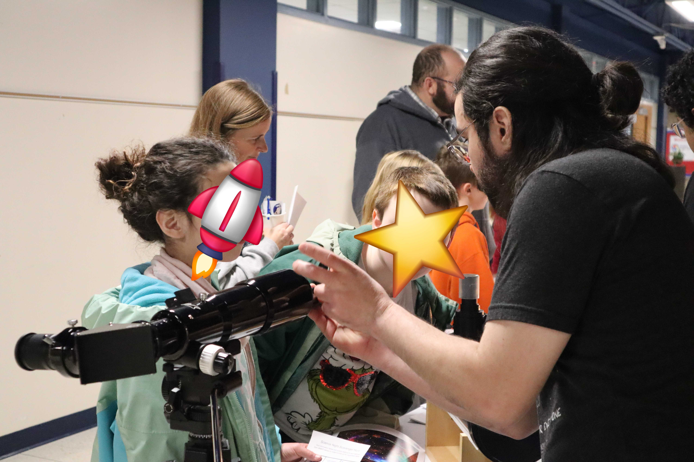
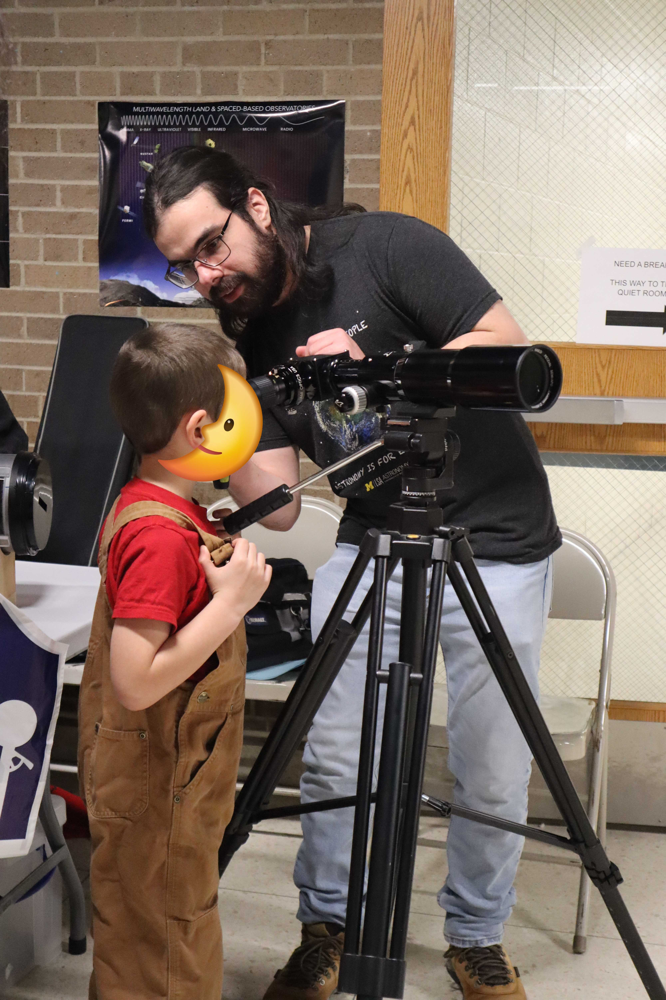

Service and Outreach
I care deeply about expanding access to astronomy and creating opportunities for students who might otherwise be excluded from research pathways.
Astronomy is not equally accessible to everyone. Access to mentorship, education, research experience, and professional networks often depends on geography, institutional resources, and timing. A major part of my free time focuses on helping reduce these barriers and making the field more equitable for students from underrepresented or underserved backgrounds.
RECA Summer Internship
Research internships are often one of the most important entry points into astronomy research. In Colombia, however, only a small number of institutions offer formal astronomy training, which means many students interested in the field begin in other STEM disciplines and may have limited access to astronomy research opportunities.
To help address this gap, I co-founded and co-organize the RECA Summer Internship, the first astronomy research internship program designed for students at Colombian institutions. Since its creation in 2021, the program has run every year, and in 2026 it is entering its sixth edition.
The RECA summer internship is a 10-week online program in which students are paired with astronomers from around the world to work on research projects in astronomy. Beyond the research itself, the program includes observing sessions with professional telescopes, coding bootcamps, career panels, and other activities aimed at building the skills and community that support future astronomers.
Public Outreach
I enjoy sharing astronomy with the public, especially with young students. Outreach is one of the ways we can make science feel more welcoming, accessible, and exciting to the next generation of scientists.
I have participated in a range of outreach activities, including school and community events. One of my recent experiences was taking part in an elementary school science fair in Michigan, where I had the opportunity to talk with students and families about astronomy and research.

